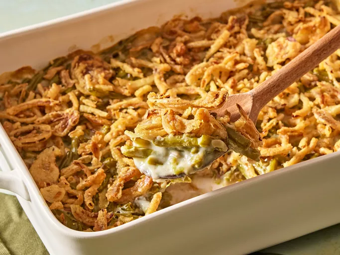

Green Bean Casserrole

Description
This green bean casserole with canned beans and French-fried onions is a holiday favorite with my family, and it's easy to make. The beloved dish has been a Thanksgiving tradition since it was created in 1955 by Dorcas Reilly, a chef from the Campbell's Test Kitchen. Campbell's printed the recipe right on the label of their soup cans and the rest is history!
Ingredients
- 2 (15 ounce) cans cut green beans, drained
- 1 (10.5 ounce) can condensed cream of mushroom soup
- ¾ cup milk
- 1 (2.8 ounce) can French fried onions
- salt and pepper to taste
Steps to follow
- Gather all ingredients. Preheat the oven to 350 degrees F (175 degrees C).
- Mix green beans, condensed cream of mushroom soup, milk, and 1/2 of the fried onions in a medium casserole dish.
- Bake in the preheated oven until heated through and bubbly, about 25 minutes.
- Sprinkle remaining onions on top, and return to the oven for 5 minutes. Season with salt and pepper to taste. Serve hot.